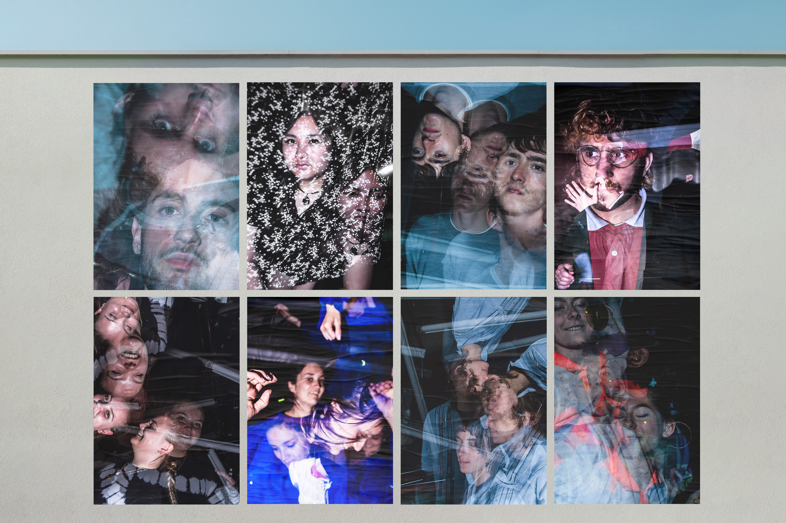

Portraits d'un soir I 2021

Série de photos d'étudiants réalisées pendant le confinement. En l'absence
de sorties et de soirées, j’ai proposé
une évasion le temps d’un moment.
Une prise en pause longue m'a permis
ce résultat sur une seule et unique photo.